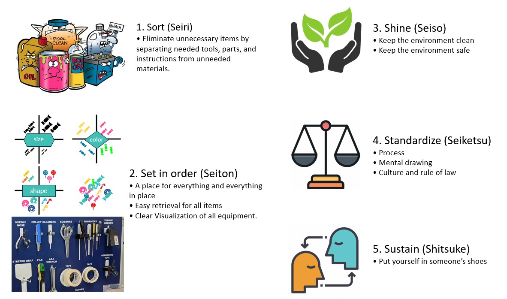

3 OS 5S
O que é
O 5S é uma prática propagada no Japão que ensina que bons hábitos, eliminação de desperdícios e perdas são capazes de modificar o humor, harmonizar o ambiente e a maneira da condução das atividades de todos.
Essa prática foi desenvolvida a partir dos hábitos das mães de família japonesas e foi introduzida no meio empresarial logo após a segunda guerra mundial. Seu objetivo principal na época, era de combater a sujeira das fábricas e desde então é ensinado como princípio educacional para a formação dos indivíduos Carvalho (2018).

O 5S é uma referência a uma série de cinco palavras do vocabulário japonês. Ele se refere a uma filosofia e uma maneira de organizar e gerenciar o espaço de trabalho com o propósito de melhorar a eficiência por meio da eliminação de materiais não utilizados, melhorando o fluxo de trabalho e mitigando os processos desnecessários. Esses princípios são os primeiros passos para a certificação ISO que em conjunto com outras metodologias, podem enriquecer o processo e torná-lo ainda mais vantajoso Nakata (2000).
O 5S é composto de cinco conceitos simples, que em japonês começam com a letra “S”: Seiri, Seiton, Seiso, Seiketsu, Shitsuke. Como não existe um significado dessas palavras começando com a letra “S” na língua portuguesa, acrescentou-se então a palavra senso a sua respectiva tradução .
Seiri - Arrumação
De acordo com o dicionário da língua japonesa shogakukan, Seiri significa dispor em perfeita ordem as coisas que estão em desordem ou que estão em situação confusa, afastar coisas inúteis ou descartá-las. É comum ver situações de desorganização no cotidiano das pessoas, desde “Onde deixei minhas chaves?“, até “Onde coloquei os relatórios?”. Estas são situações que podem facilmente ser evitadas com a aplicação do seiri Nakata (2000).
Na filosofia dos 5S no Japão, a aplicação do seiri obedece a uma ordem de classificação.
Desnecessárias: coisas que não são utilizadas como ferramentas avariadas, moldes, materiais fora de linha, peças e materiais não conformes, equipamentos antigos ou em desuso.
Não essenciais: coisas necessárias, porém, não são utilizadas com muita frequência
Essenciais: coisas necessárias e que são utilizadas frequentemente.
Uma das barreiras na execução do seiri é o pensamento de que os objetos que estão atualmente em desuso irão ser utilizados algum dia, ficando meses ou até anos armazenados sem que haja utilização Nakata (2000).
Seiton - Ordenação
No dicionário da língua japonesa shogakukan, Seiton significa organizar os objetos e as coisas que estão em desordem ou dispor as coisas necessárias em perfeita ordem e indicá-las de forma que qualquer pessoa possa encontrá-las.
Refere-se à disposição de ferramentas, equipamentos ou materiais de forma que melhore o fluxo de trabalho, onde os objetos são claramente identificados com relação ao local, conteúdo, quantidade e disposição eliminando movimentos desnecessários economizando tempo e agilizando a localização.
Seiso - Manter limpo
Ainda de acordo com o dicionário da língua japonesa shogakukan, a palavra Seiso significa fazer uma perfeita operação de remoção de sujeira.
Manter limpo é diferente de limpar. Por exemplo. Imagine que alguem em um dia ruim lhe perturbe no transito com o palavrão. O ato de compreender que talvez a pessoa tenha tido um dia ruim e com isso ignorar, é manter a mente limpa. Por outro lado, se o pensamento for limpar, você poderá retribuir a provocação e talvez iniciar uma discusão gerando stress para então posteriormente ter que limpar a mente. Manter limpo, é diferente de limpar, e isso vale para ideias, pensamentos, ambientes e revelam um outro estágio de conciência.
Em um processo de produção, refere-se à necessidade de manter o mais limpo possível o local de trabalho e de realizar inspeções periódicas, utilizando efetivamente os cinco sentidos, verificando-se a existência de anormalidades e falhas minúsculas, ou seja, todas as fontes de sujeira, devem ser eliminadas e deve ser criada uma rotina de limpeza que envolva os operadores de cada máquina, equipamento ou estação de trabalho. Essas práticas, auxiliam na prevenção de acidentes, além de melhorar as condições de trabalho de todas as pessoas dentro da empresa (RIBEIRO, 2006).
Seiketsu – Higiene
A palavra Seiketsu, no dicionário da língua japonesa shogakukan, significa limpo, isento de sujeira. Ambiente com excelentes condições sanitárias e ainda pessoa com retidão de caráter e conduta (NAKATA, 2000).
Na filosofia dos 5S japonesa, higiene se refere à manutenção dos três sensos anteriores, ou seja, arrumação, ordenação e limpeza. Cria-se dessa forma um ambiente com boas condições de saúde física e mental. Significa ainda garantir que informações e comunicação sejam feitas de forma simples e claras, e que todas as pessoas consigam compreender Nakata (2000)
Shitsuke – Se colocar no lugar do outro
A palavra Shitsuke, no dicionário da língua japonesa shogakukan significa dotar-se de boas maneiras ou já dotado de boas maneiras. Refere-se ao ato de desenvolver hábitos de cumprir os deveres como membro da sociedade. Vem a ser também um movimento de educação pessoal para desenvolver as potencialidades do ser humano, ou seja, saber imaginar situações nas quais se colocam no lugar do outro e atuar com os sentimentos que eles teriam naquelas circunstâncias, de modo a tornar isso um hábito Nakata (2000).
Conforme Nakata (2000), o shitsuke seria o principal objetivo a ser perseguido pelas empresas, pela sociedade e pelo país, considerando que a implementação do 5S é uma técnica de melhoria.
Os efeitos da aplicação do 5S são de uma mudança cultural dentro e fora das empresas, mudando o jeito de pensar das pessoas, direcionando-as a um comportamento melhor, e que serão aplicados para toda a vida. Não deve ser tratado apenas como um programa de limpeza, mas sim uma nova maneira de conduzir uma organização a ganhos expressivos de produtividade e melhorar a qualidade de vida das pessoas.
Qual o objetivo
- melhoria do ambiente de trabalho.
- prevenção de acidentes.
- redução de custos.
- eliminação de desperdícios.
- melhoria das relações humanas.
- melhoria da qualidade de produtos e serviços.
De onde vem
- O prática de 5S vem da necessidade de sustentabilidade e estabilidade no ambiente. A sustentabilidade tem suas relações com eficiência do uso de recursos, aprendizado contínuo e manutenção da competitividade. A estabilidade tem suas relações com equilibrio principalmente em situações as quais necessita de tranquilidade nas decisões e uso do sistema 2 do cerebro humano. Conforme Korteling, Brouwer, and Toet (2018), o cerebro, assim como todas as redes neurais funciona de forma altamente associativa. Automaticamente e subconcientemente nosso cerebro busca por correlação, coerência e conexões causais. A associação constitui a base da capacidade humana de reconhecimento de padrões e estruturas coerentes na abundância de informações absorvidas e processadas pelo cerebro. Essa forma associativa de perceber, compreender e prever o mundo, faz com que o ser humano organize as observações em relações e padrões regulares e ordenados, e temos dificuldade em lidar com a aleatoriedade, a imprevisibilidade e o o caos. Se o uso de heurística é inevitável pelo ser humano em um primeiro momento, a harmonia no ambiente ajuda a evitar o bias cognitivo que resulta em decisões indesejadas.
Como fazer
- Uma forma comum de começar o 5S e pela identificação de equipamentos para evitar ambiguidade. Exemplos vão desde etiquetas de identificação, guias pintadas no chão para delimitação de locais específicos, até shadowboards para ferramentas e utensílios.
- Outra forma é começar pelo proprio ambiente de trabalho. Criar uma rotina de limpesa e organização na mesa, na área de trabalho do computador, da maquina ou equipamento de trabalho. Na limpeza e cuidados antes e após o termino do trabalho.
Pra onde vai
- Os efeitos são sentidos por todos que frequentam o ambiente pois tendem a sentir facilidade em adaptar-se nele. O equilibrio na segurança pode fazer uma pessoa se sentir mais livre para explorar suas potencialidades. O mesmo vale para facilidade de se locomover, localizar ou encontrar algo que precisa.
Qual o resultado
- Processos mais simplificados e redução de erros durante o processo.
- Melhora do ambiente de trabalho e a comunicação entre as equipes de diferentes áreas e também de novos integrantes.
- Melhoria da qualidade e consequentemente satisfação do consumidor além de